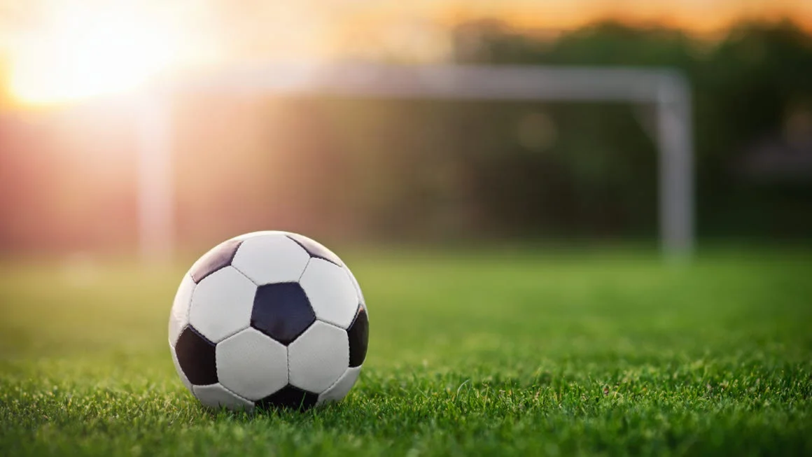

Eventer!
Arabisk Kurs
Hver lørdag
Fra 12.00 til 14.15
Skjetten ungdomskole

Internasjonal cup for ungdommer
Sat, Oct 5
1:30 PM
IKKE AKTIV AKKURAT NÅ!
Kvinne Styrking
Sat, Oct 5
1:30 PM
Lillestrøm biblotek (IKKE AKKTUELL NÅ!)
Kulturmix
Sat, Oct 5
1:30 PM
Lillestrøm kultursenter (IKKE AKKTUELL NÅ!)
Kulturellkafe
Sat, Oct 5
1:30 PM
IKKE AKKTUELL NÅ!